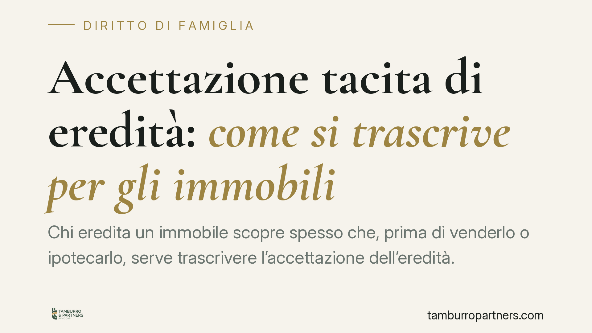

Accettazione tacita di eredità: come si trascrive per gli immobili
Chi eredita un immobile scopre spesso che, prima di venderlo o ipotecarlo, serve trascrivere l'accettazione dell'eredità. Quando l'accettazione è tacita, l'adempimento non è automatico e richiede un titolo idoneo. Spieghiamo cos'è l'accettazione tacita, perché va trascritta e quali cautele servono per non bloccare la continuità delle trascrizioni immobiliari.

Il fatto: perché la trascrizione conta
Chi riceve in eredità un immobile non sempre compie un atto formale di accettazione. L'accettazione può essere tacita, cioè desumersi da comportamenti che presuppongono la volontà di accettare. Il problema pratico emerge quando l'erede vuole vendere, ipotecare o comunque disporre del bene: il notaio e i terzi pretendono che la vicenda successoria risulti dai Registri Immobiliari. Senza trascrizione dell'accettazione, la catena dei passaggi di proprietà presenta una lacuna.
Inquadramento normativo
L'accettazione tacita è definita dall'art. 476 cod. civ.: si ha quando il chiamato all'eredità compie un atto che presuppone necessariamente la volontà di accettare e che non avrebbe il diritto di compiere se non nella qualità di erede. Esempi tipici: la vendita di un bene ereditario, la riscossione di crediti del defunto, la volturazione catastale accompagnata da atti dispositivi.
La trascrizione dell'acquisto per causa di morte è disciplinata dall'art. 2648 cod. civ., che impone di trascrivere l'accettazione dell'eredità (espressa o tacita) per assicurare la continuità delle trascrizioni prevista dall'art. 2650 cod. civ. In sostanza, i passaggi di proprietà devono risultare in sequenza ininterrotta: se manca l'anello dell'accettazione dell'erede, le trascrizioni successive non producono pieno effetto verso i terzi.
Resta fermo il principio di tipicità dei titoli trascrivibili (art. 2657 cod. civ.): la trascrizione presuppone di regola una sentenza, un atto pubblico o una scrittura privata autenticata o accertata giudizialmente. Per l'accettazione tacita, il titolo da trascrivere è normalmente l'atto stesso dal quale l'accettazione si desume (ad esempio l'atto di vendita del bene ereditario) oppure un apposito atto notarile che ricostruisce la vicenda successoria.
Una precisazione sulle dichiarazioni sostitutive
Circolano letture secondo cui l'accettazione tacita potrebbe essere trascritta sulla base di una semplice dichiarazione sostitutiva di atto notorio. Si tratta di una ricostruzione che va trattata con prudenza: allo stato, il sistema della pubblicità immobiliare richiede titoli dotati dei requisiti dell'art. 2657 cod. civ., e la dichiarazione sostitutiva può, se mai, attestare un fatto preesistente — non costituirlo. In ogni caso, chi rende dichiarazioni non veritiere in un atto notorio risponde penalmente (artt. 495 e 76 d.P.R. 445/2000).
Eventuali novità normative vanno verificate direttamente in Gazzetta Ufficiale prima di farvi affidamento. Finché una riforma non è pubblicata e vigente con un testo certo, l'adempimento va impostato secondo le regole ordinarie sopra descritte.
Implicazioni pratiche per l'erede
Per chi ha ereditato un immobile, il nodo è questo: aver accettato tacitamente non basta, serve che l'accettazione sia trascritta perché la futura compravendita o l'accesso al credito ipotecario non si arenino. Il notaio rogante, in sede di vendita, verifica la continuità e provvede di norma a trascrivere l'accettazione tacita contestualmente all'atto dispositivo.
Le criticità più frequenti riguardano le successioni risalenti, con più passaggi non regolarizzati, e i casi di pluralità di eredi in cui non tutti hanno compiuto atti di accettazione. In queste situazioni la ricostruzione documentale è delicata e incide su tempi e costi dell'operazione.
Cosa fare in concreto
- Ricostruite la vicenda successoria: reperite la dichiarazione di successione, le visure catastali aggiornate e la documentazione degli atti già compiuti sui beni.
- Individuate l'atto rivelatore dell'accettazione tacita: verificate se esiste già un atto (vendita, costituzione di diritti) idoneo a fungere da titolo trascrivibile.
- Coinvolgete per tempo il notaio: la trascrizione dell'accettazione tacita avviene di regola per via notarile, spesso in concomitanza con l'atto di disposizione.
- Attenzione alle dichiarazioni rese sotto responsabilità: ogni autocertificazione sui fatti successori deve essere veritiera; le dichiarazioni false hanno rilevanza penale.
- Verificate la continuità delle trascrizioni prima di qualsiasi vendita, così da non scoprire lacune a trattativa avviata.
Consigliamo di affrontare la regolarizzazione prima di mettere l'immobile sul mercato, e non quando l'acquirente è già individuato: anticipare i controlli riduce il rischio di stalli e rinegoziazioni.
Contributo informativo a cura di Tamburro & Partners Avvocati. Non costituisce parere legale.
Ogni famiglia ha il suo equilibrio.
Separazione, divorzio, affidamento, assegno: se vuoi un confronto riservato su una specifica situazione, scrivi allo studio. Ti rispondiamo entro un giorno lavorativo.